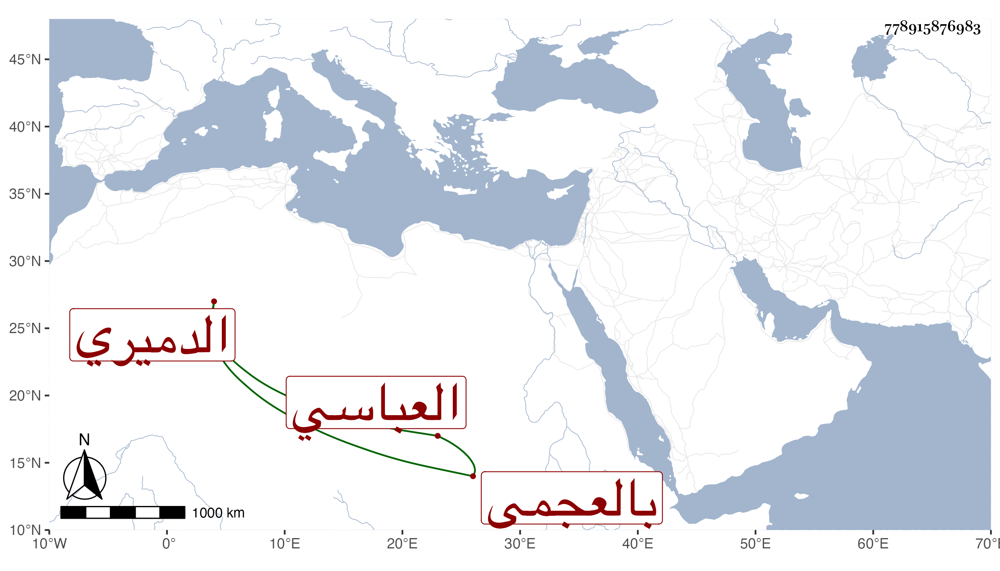

0902Sakhawi.DawLamic.ITO20230111-ara1.EIS1600.778915876983
Biography ID: 778915876983
154
محمد بن محمد بن بدير بدر الدين العباسي زوج أخت البدر محمد بن محمد بن محمد بن أحمد بن عبد الملك الدميري ورفيقه في مشارفة البيمارستان ويعرف بالعجمي . كان مشكور السيرة محببا إلى الناس . مات في شوال سنة ست وأربعين وكثر التأسف عليه رحمه الله وأظن جده صاحب المدرسة البديرية بباب سر الصالحية .
